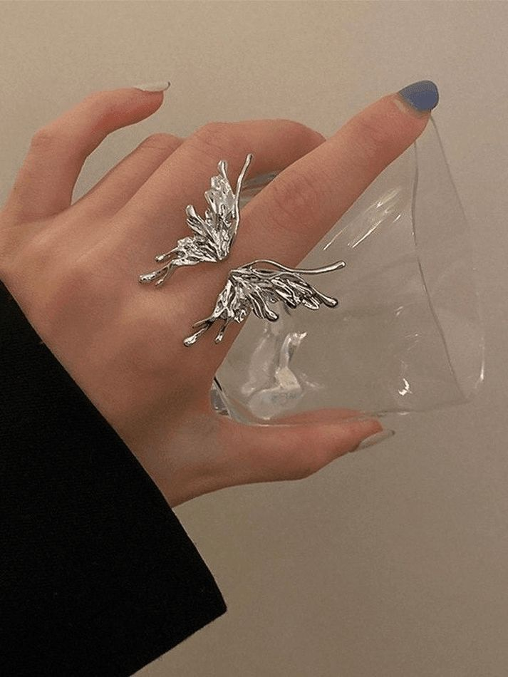
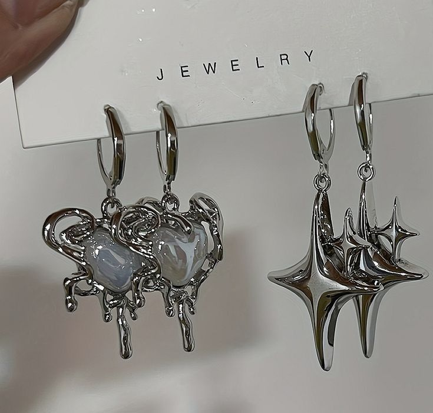
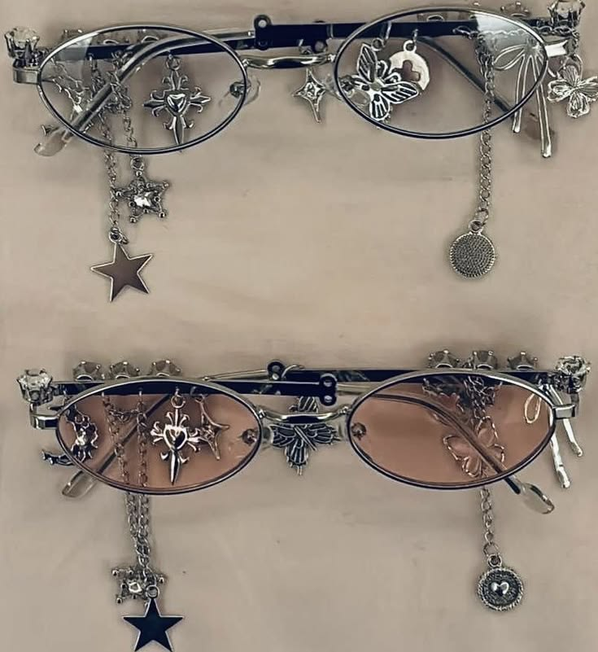

THE ECHOES
靈魂的真實迴響：不完美，且絕不討好世界。

液態銀的亮光感很高級，戴著洗手也沒掉色，品質完全對得起價格！
剪裁偏大膽，原本擔心很難駕馭，但上身後骨架線條修飾得很好，氣場很足。

實品很有份量，戴久了耳朵也不會痛，金屬熔融的細節處理得很好。

鏡片遮光度剛好，框邊的尖刺細節很低調但很帥，配戴舒適度很高。
客服回覆算快，包裝用黑紙盒包得很精緻，完全是設計師品牌的規格。
重磅布料的挺度很夠，版型解構得很乾淨，是我衣櫃裡最常穿的一套。
實物比照片更有重量感，流線做得很細緻，出門沒被撞過款。
鏈條跟鏡框的垂墜感拿捏得很好，配戴時不會拉扯。細看手工焊接的細節很紮實，是近期買過最滿意的配件。